Buku Panduan & Naskah Narasi Pemateri (Slide 1 – 11)
Gunakan halaman ini di HP atau tablet Anda saat berdiri mengajar. Karena tampilan slide di proyektor sudah dibuat sangat visual & minim teks, cukup tunjuk gambar sesuai petunjuk 👆 Aksi Tunjuk Layar lalu bacakan 🎙️ Narasi Bicara.
Sampul Utama: Pemetaan Poligon & Pengawasan Kebun Real-Time
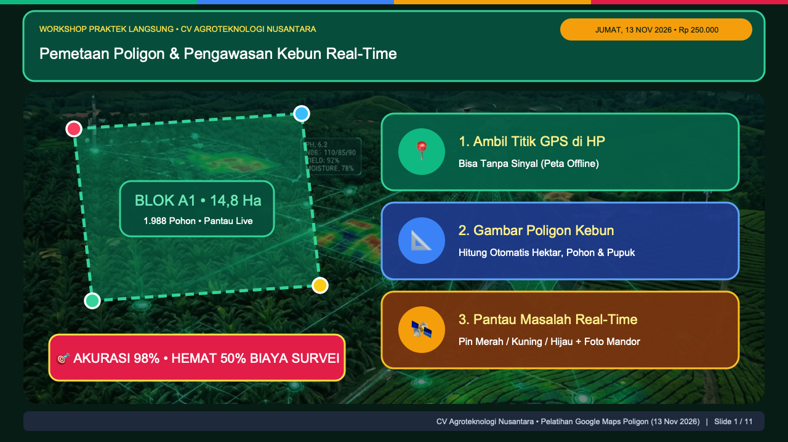
BLOK A1 • 14,8 Ha di kiri layar, lalu tunjuk berurutan 3 kotak warna di sebelah kanan (1. Ambil Titik GPS, 2. Gambar Poligon, 3. Pantau Masalah Real-Time).
"Selamat pagi Bapak dan Ibu semuanya! Selamat datang di Workshop Praktek Langsung CV Agroteknologi Nusantara."
"Hari ini kita tidak sedang kuliah teori pemetaan yang rumit. Hari ini kita langsung praktek membuat sistem kendali kebun dan lahan yang biasa dipakai perusahaan perkebunan besar, tapi kita buat menggunakan aplikasi gratis yang sudah ada di HP dan laptop Bapak/Ibu sekalian."
👉 Tunjuk gambar poligon hijau BLOK A1 di kiri layar
"Di akhir sesi sore nanti, setiap peserta akan membawa pulang peta poligon digital seperti di layar ini—lengkap dengan luas hektar otomatis, hitungan jumlah pohon dan pupuk, serta sistem laporan mandor real-time."
👉 Tunjuk 3 kotak warna di kanan layar
"Hanya ada 3 langkah utama yang kita kuasai hari ini:
Pertama, cara mengambil titik GPS di HP—bahkan saat di tengah kebun tidak ada sinyal internet.
Kedua, cara menggambar poligon blok kebun untuk menghitung hektar, populasi pohon, dan pupuk secara otomatis.
Ketiga, cara memantau masalah lapangan real-time memakai pin warna Merah, Kuning, dan Hijau lengkap dengan foto bukti dari mandor."
3 Aplikasi Gratis yang Kita Gunakan Hari Ini
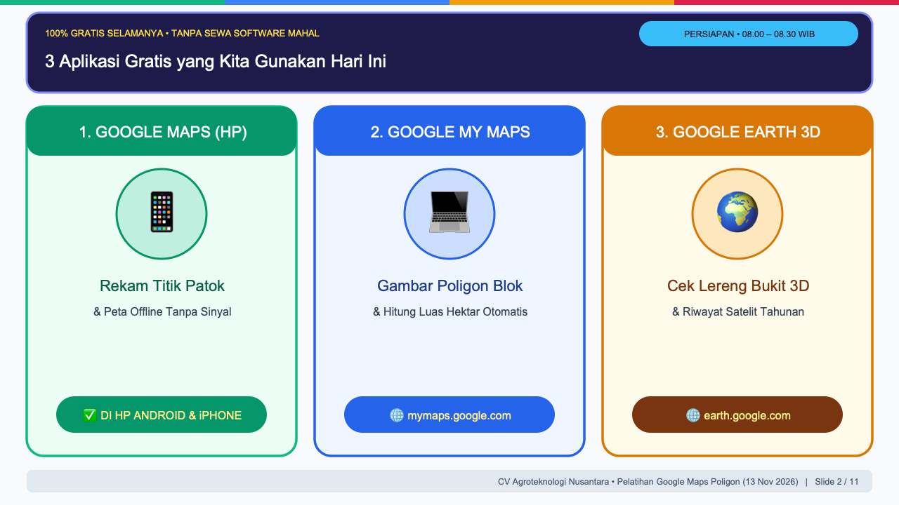
"Bapak/Ibu sering bertanya kepada kami: 'Pak, apakah untuk membuat peta blok kebun seperti tadi harus langganan software GIS puluhan juta rupiah atau harus beli drone mahal?' Jawabannya: Tidak perlu. Hari ini kita menggunakan 3 aplikasi resmi dari Google yang 100% gratis selamanya."
👉 Tunjuk Kartu 1 — Google Maps HP
"Aplikasi pertama adalah Google Maps biasa di HP Android atau iPhone. Ini adalah 'senjata lapangan' mandor dan surveyor untuk merekam titik patok batas dan mengunduh peta offline."
👉 Tunjuk Kartu 2 — Google My Maps
"Aplikasi kedua adalah Google My Maps di alamat mymaps.google.com. Ini adalah 'meja gambar digital' kita di laptop untuk mengimpor titik dari Excel, menggambar poligon blok, dan menghitung luas hektar secara otomatis."
👉 Tunjuk Kartu 3 — Google Earth 3D
"Aplikasi ketiga adalah Google Earth 3D di earth.google.com. Ini kita pakai siang nanti untuk memiringkan tampilan bukit secara 3 dimensi, melihat kemiringan lereng, dan memutar kembali foto satelit dari tahun 2018 hingga 2026."
mymaps.google.com."
Studi Kasus: Klaim Kertas (25 Ha) vs Bukti Poligon Satelit (21,8 Ha)
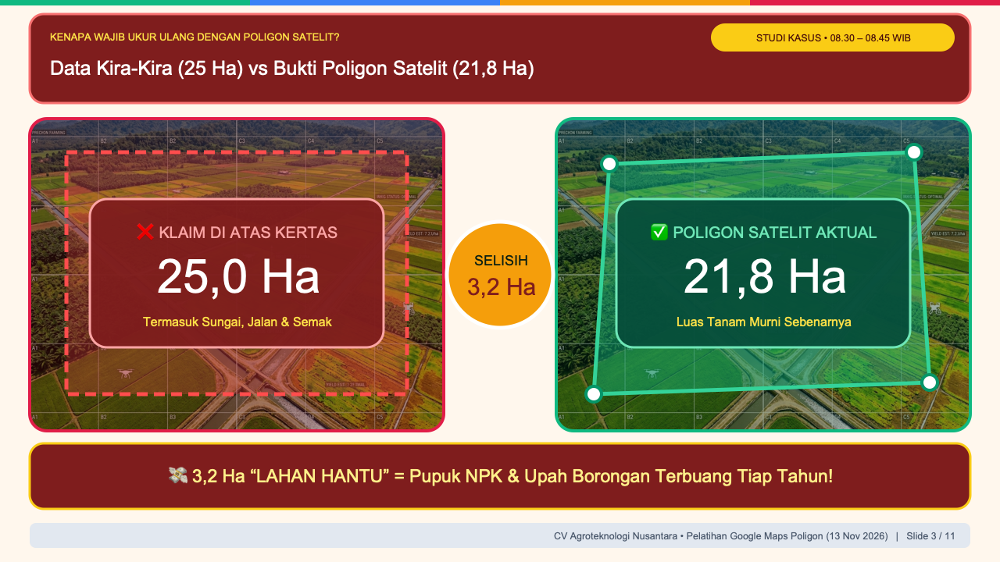
25,0 Ha di kiri, kotak hijau 21,8 Ha di kanan, lalu lingkaran kuning SELISIH 3,2 Ha di tengah.
"Sebelum kita masuk ke Modul 1, mari kita lihat kenapa kita wajib mengukur ulang kebun dengan poligon satelit. Ini adalah kasus nyata dari audit kebun yang kami tangani."
👉 Tunjuk kotak merah 25,0 Ha di kiri
"Di atas kertas laporan lama, luas Blok A tertulis 25,0 Hektar. Selama bertahun-tahun, pemilik kebun membeli pupuk NPK dan membayar upah borongan babat rumput selalu dikalikan 25 Hektar."
👉 Tunjuk kotak hijau 21,8 Ha di kanan
"Begitu kita ambil titik patoknya dan kita gambar poligonnya di atas citra satelit, lalu kita keluarkan alur sungai, jalan produksi, dan semak belukar di pinggir tebing—ternyata luas tanam murninya hanya 21,8 Hektar!"
👉 Tunjuk lingkaran tengah SELISIH 3,2 Ha
"Artinya apa Bapak/Ibu? Ada 3,2 Hektar 'Lahan Hantu'. Selama bertahun-tahun, kebun ini membuang pupuk dan membayar upah perawatan untuk 3,2 hektar lahan yang sebenarnya berisi sungai dan jalan batu. Dengan poligon satelit hari ini, kebocoran anggaran seperti ini langsung tertutup rapat."
4 Manfaat Utama bagi Ekosistem & Lahan di Pulau Jawa
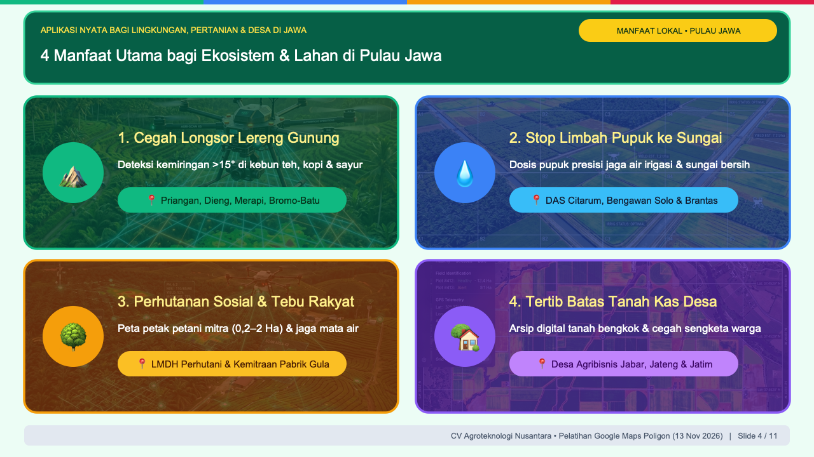
"Khusus untuk kondisi wilayah kita di Pulau Jawa—di mana lahan sangat padat, topografi berbukit-bukit, dan berdekatan dengan pemukiman warga—pemetaan poligon ini punya 4 manfaat lingkungan dan sosial yang sangat vital:"
👉 Tunjuk Kartu 1 — Cegah Longsor Lereng Gunung
"Pertama, Mencegah Longsor di Lereng Pegunungan Jawa. Perkebunan teh, kopi, cengkeh, dan hortikultura di kawasan Priangan (Jawa Barat), Dieng & lereng Merapi (Jawa Tengah), hingga lereng Bromo, Arjuno, dan Ijen (Jawa Timur) berada di kemiringan curam. Dengan memetakan poligon zona miring di atas 15 derajat, kita tahu persis titik mana yang wajib dipasang terasering dan tanaman penguat tebing agar tanah pucuk (topsoil) tidak hanyut saat musim hujan."
👉 Tunjuk Kartu 2 — Stop Limbah Pupuk ke Sungai
"Kedua, Menghentikan Limbah Pupuk Kimia ke Sungai. Kalau kita salah hitung luas lahan—misalnya kelebihan hitung 3 hektar seperti tadi—maka berton-ton pupuk Urea dan NPK berlebih akan tercuci air hujan masuk ke saluran irigasi dan mencemari DAS Citarum, Citanduy, Serayu, Bengawan Solo, hingga Sungai Brantas. Dengan poligon presisi, dosis pupuk pas sesuai jumlah pohon, sehingga air sungai dan sawah di hilir tetap bersih."
👉 Tunjuk Kartu 3 — Perhutanan Sosial & Tebu Rakyat
"Ketiga, Penataan Perhutanan Sosial (LMDH) dan Kemitraan Tebu/Kopi Rakyat. Di Jawa, ribuan petani hutan mengelola petak garapan kecil ukuran 0,2 sampai 2 Hektar di bawah naungan Perhutani atau kemitraan Pabrik Gula. Dengan poligon digital, batas petak antar-petani tercatat rapi, dan zona lindung sabuk hijau di sekitar mata air desa tidak boleh ikut dibuka."
👉 Tunjuk Kartu 4 — Tertib Batas Tanah Kas Desa
"Keempat, Menertibkan Batas Tanah Kas Desa (Tanah Bengkok). Di desa-desa agribisnis Jawa Barat, Jawa Tengah, dan Jawa Timur, patok bambu atau batu sering bergeser saat pengolahan tanah. Dengan diarsipkan menjadi file poligon .KML, pemerintah desa dan koperasi punya bukti batas digital yang transparan."
Modul 1A: Cara Ambil Titik GPS di HP (Bisa Tanpa Sinyal)
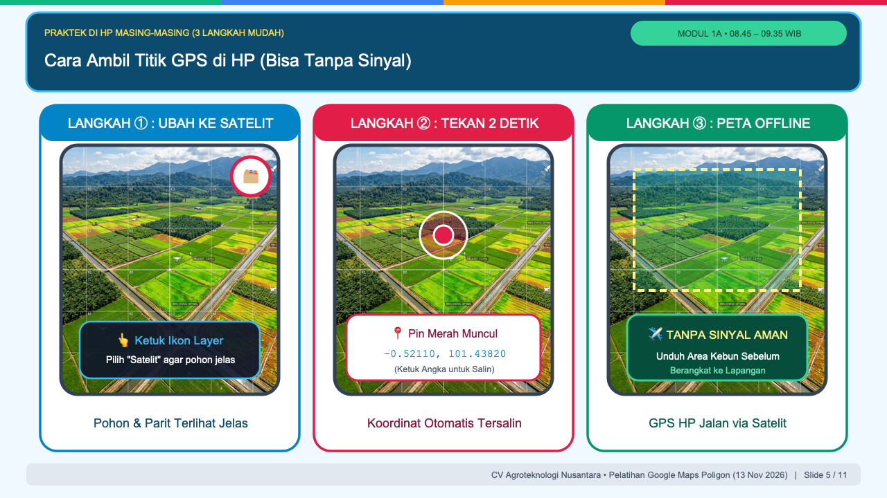
"Sekarang silakan angkat HP Bapak/Ibu masing-masing, kita masuk ke Praktek Modul 1A. Buka aplikasi Google Maps bawaan di HP. Ikuti 3 layar di depan ini:"
👉 Tunjuk Layar HP ① — Ubah ke Satelit
"Langkah Pertama: Ubah tampilan peta ke mode Satelit. Kalau kita baru membuka Google Maps, tampilannya masih berupa peta jalan warna putih-kuning. Ketuk ikon tumpukan kertas (Layer) di pojok kanan atas layar HP, lalu pilih 'Satelit'. Sekarang tajuk pohon, parit, dan jalan kebun langsung terlihat jelas."
👉 Tunjuk Layar HP ② — Tekan 2 Detik
"Langkah Kedua: Tekan dan tahan jari selama 2 detik. Perbesar layar HP Bapak/Ibu ke titik patok yang ingin diambil koordinatnya. Tempelkan dan tahan jari selama 2 detik sampai muncul Pin Merah. Lihat angka desimal yang muncul, misalnya -0.52110, 101.43820. Cukup ketuk sekali pada angka tersebut, maka koordinatnya otomatis tersalin ke memori HP!"
👉 Tunjuk Layar HP ③ — Peta Offline Tanpa Sinyal
"Langkah Ketiga: Bagaimana kalau di tengah kebun tidak ada sinyal internet? Chip GPS di dalam HP menangkap sinyal langsung dari satelit di langit, bukan dari menara BTS seluler. Syaratnya hanya satu: sebelum berangkat ke kebun, ketuk foto profil di pojok kanan atas Google Maps, pilih menu 'Peta Offline', lalu unduh kotak area kebun kita. Begitu sampai di tengah kebun yang blank spot sinyal sekalipun, titik biru GPS tetap berjalan akurat!"
Modul 1B: Alur Impor Massal Koordinat Excel / CSV (1-Klik)
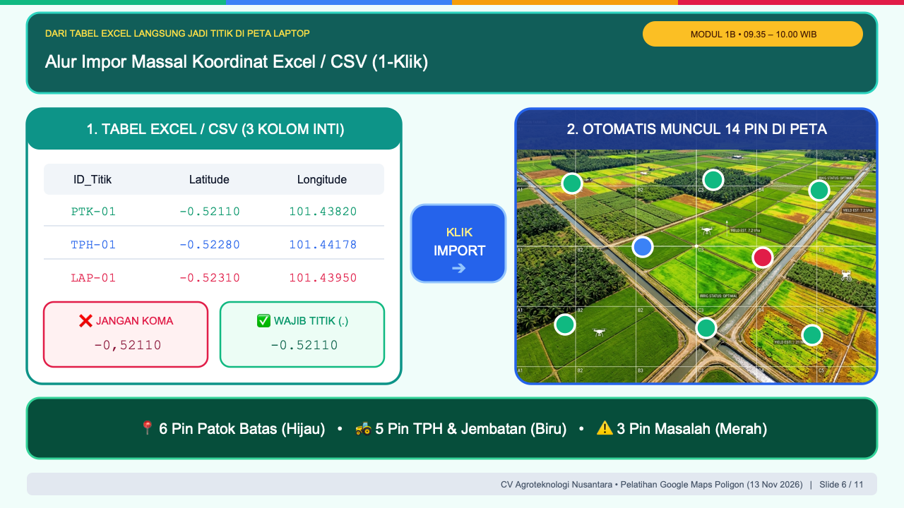
❌ JANGAN KOMA vs ✅ WAJIB TITIK (.), tombol biru KLIK IMPORT, lalu peta 14 pin di kanan.
"Setelah mandor atau tim survei mengumpulkan 14 atau bahkan 100 titik koordinat dari lapangan, apakah kita harus mengetiknya satu per satu di laptop? Tentu tidak. Kita gunakan Impor Massal 1-Klik."
👉 Tunjuk Kotak 1 di kiri — Tabel Excel 3 Kolom
"Di laptop masing-masing, silakan unduh file latihan yang sudah kami sediakan: Koordinat_Blok_Sawit_Latihan.csv. Kalau Bapak/Ibu membuat tabel sendiri di Excel, pastikan minimal ada 3 kolom inti: kolom nama titik (ID_Titik), kolom Lintang (Latitude), dan kolom Bujur (Longitude)."
👉 Tunjuk kotak merah ❌ JANGAN KOMA & hijau ✅ WAJIB TITIK
"Perhatikan aturan emas ini Bapak/Ibu! Sembilan puluh persen kegagalan saat impor peta terjadi karena komputer Indonesia memakai koma (,) untuk angka desimal. Google Maps hanya mengenali TITIK (.) sebagai pemisah desimal. Jadi pastikan angkanya tertulis -0.52110 pakai titik, bukan -0,52110 pakai koma."
👉 Tunjuk tombol KLIK IMPORT dan Peta 14 Pin di kanan
"Sekarang buka Google My Maps di laptop, klik 'Create a New Map', lalu klik tombol 'Import' dan masukkan file Koordinat_Blok_Sawit_Latihan.csv. Dalam 2 detik, ke-14 titik langsung berbaris rapi di atas peta satelit: 6 Pin Patok Batas (Hijau), 5 Pin TPH & Jembatan (Biru), dan 3 Pin Masalah (Merah)."
Modul 2A: 3 Langkah Menggambar Poligon & Hitung Hektar Otomatis
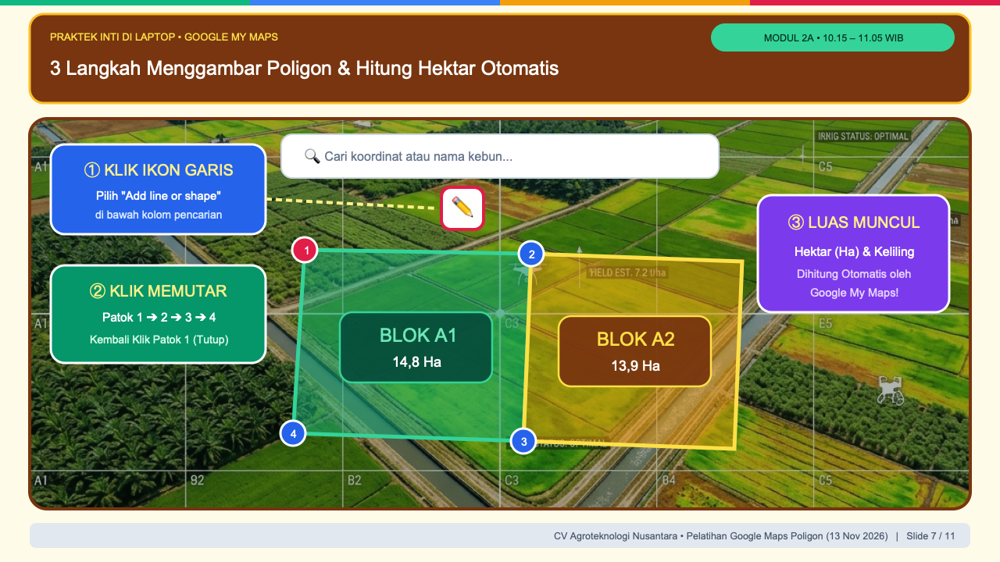
① KLIK IKON GARIS, lalu kotak hijau ② KLIK MEMUTAR beserta titik 1 ➔ 2 ➔ 3 ➔ 4, dan kotak ungu ③ LUAS MUNCUL.
"Setelah titik-titik patok batas muncul di peta, sekarang kita masuk ke inti pelatihan hari ini: Menggambar Poligon Blok Kebun dan Menghitung Hektar Otomatis. Cukup ikuti 3 langkah berurutan di layar:"
👉 Tunjuk Nomor ① — Klik Ikon Garis
"Langkah Pertama: Lihat tepat di bawah kolom pencarian Google My Maps di bagian atas layar. Klik ikon titik-dan-garis, lalu pilih 'Add line or shape' (Tambahkan garis atau bentuk)."
👉 Tunjuk Nomor ② — Klik Memutar Patok 1 ➔ 2 ➔ 3 ➔ 4
"Langkah Kedua: Klik satu kali tepat di atas pin Patok 1, tarik garisnya ke Patok 2, lanjut ke Patok 3, lanjut ke Patok 4 mengikuti batas kebun searah jarum jam. Kunci utamanya: Setelah sampai di patok terakhir, klik kembali tepat di titik Patok 1 (titik awal) untuk menutup kurva!"
👉 Tunjuk Nomor ③ — Luas Muncul
"Langkah Ketiga: Begitu titik awal diklik kembali, garis tersebut langsung berubah menjadi bidang warna (Poligon) seperti BLOK A1 dan BLOK A2. Lihat di pojok kanan bawah kotak informasi poligon: angka Luas dalam satuan Hektar (Ha) dan Keliling dalam Kilometer (km) langsung dihitung otomatis oleh Google My Maps!"
Modul 2B: Alur Hitung Luas Bersih, Populasi Pohon & Pupuk
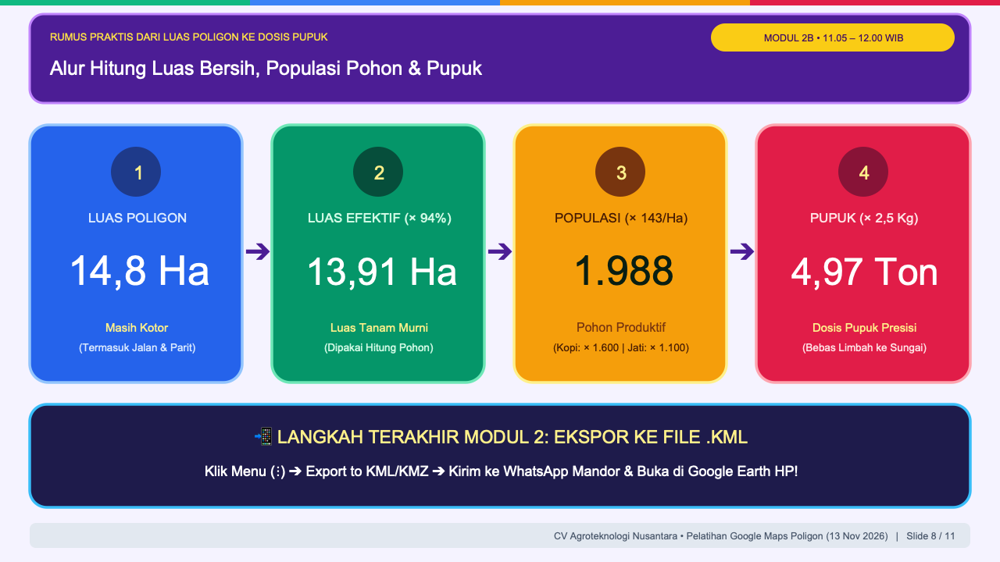
14,8 Ha), Kartu 2 (13,91 Ha), Kartu 3 (1.988 Pohon), Kartu 4 (4,97 Ton), lalu bilah bawah (Ekspor ke File .KML).
"Bapak/Ibu sekalian, angka luas poligon yang muncul di Google My Maps tadi—misalnya 14,8 Hektar—jangan langsung dikalikan jumlah pohon! Karena di dalam blok 14,8 Hektar itu masih ada jalan produksi, parit drainase, dan TPH. Mari kita lihat 4 langkah rumus praktis di layar ini:"
👉 Tunjuk Kartu 1 (Biru) & Kartu 2 (Hijau)
"Tahap 1 & 2: Dari Luas Poligon Kotor 14,8 Ha ke Luas Efektif 13,91 Ha. Rata-rata sekitar 6% lahan terpakai untuk jalan kebun dan parit. Maka 14,8 Ha dikali 94% menghasilkan 13,91 Hektar Luas Tanam Murni."
👉 Tunjuk Kartu 3 (Oranye: 1.988 Pohon)
"Tahap 3: Hitung Populasi Pohon Produktif. Untuk kelapa sawit jarak segitiga 9 meter, standarnya 143 pohon per hektar. Maka 13,91 Ha dikali 143 sama dengan 1.988 pohon. (Untuk kebun di Jawa: Kopi jarak 2,5×2,5m kalikan 1.600 pohon/Ha, dan Jati/Sengon jarak 3×3m kalikan 1.100 pohon/Ha)."
👉 Tunjuk Kartu 4 (Merah: 4,97 Ton) & Bilah Bawah
"Tahap 4: Hitung Dosis Pupuk Presisi. Jika dosis pemupukan adalah 2,5 Kg NPK per pohon, maka 1.988 pohon dikali 2,5 Kg hasilnya tepat 4,97 Ton pupuk. Terakhir, klik ikon titik tiga (⋮) ➔ Export to KML/KMZ untuk mengunduh file .KML dan kirimkan ke WhatsApp mandor!"
Modul 3: Sistem Pengawasan Kebun Real-Time (3 Warna Pin)
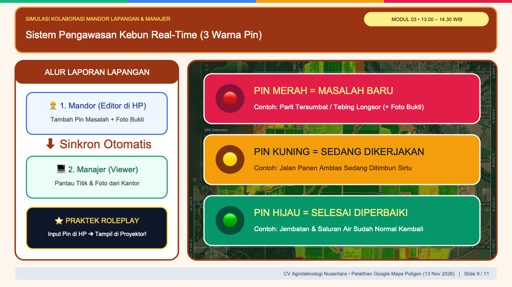
Mandor Editor ⬇ Manajer Viewer), lalu tunjuk 3 bilah warna di kanan (Pin Merah, Pin Kuning, Pin Hijau).
"Selamat siang Bapak/Ibu, sekarang kita masuk ke sesi yang paling seru: Bagaimana memantau masalah kebun secara real-time tanpa harus tenggelam di ratusan chat grup WhatsApp!"
👉 Tunjuk Kotak Kiri — Alur Laporan Lapangan
"Caranya: klik tombol 'Share' (Bagikan) di Google My Maps. Berikan akses Editor kepada akun Google Mandor Lapangan agar mandor bisa menambah pin dan foto dari HP-nya. Sedangkan untuk Manajer atau Direksi, berikan akses Viewer agar mereka bisa memantau dari kantor."
👉 Tunjuk 3 Bilah Warna di Kanan
"Kita terapkan SOP 3 Warna Pin seperti lampu lalu lintas:
• 🔴 PIN MERAH = MASALAH BARU: Parit tersumbat / tebing longsor (+ foto bukti mandor).
• 🟡 PIN KUNING = SEDANG DIKERJAKAN: Jalan panen amblas sedang ditimbun sirtu.
• 🟢 PIN HIJAU = SELESAI DIPERBAIKI: Jembatan & saluran air sudah normal kembali."
Modul 4: 3 Teknik Audit Satelit: Kontur 3D, Time-Lapse & Blank Spot
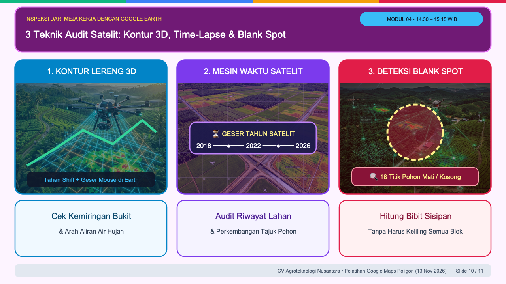
"File .KML yang sudah kita buat tadi sekarang kita buka di Google Earth (earth.google.com). Di sini ada 3 teknik audit satelit dari meja kerja:"
👉 Tunjuk Panel 1 — Kontur Lereng 3D
"Teknik Pertama: Cek Kontur Lereng 3D. Setelah file KML dibuka, tahan tombol Shift di keyboard sambil menggeser mouse. Peta akan miring secara 3 dimensi sehingga kita langsung melihat kemiringan bukit dan arah aliran air hujan."
👉 Tunjuk Panel 2 — Mesin Waktu Satelit 2018–2026
"Teknik Kedua: Mesin Waktu Satelit (Historical Imagery). Klik ikon jam di bilah atas, lalu geser tahun dari 2018, 2022, hingga 2026 untuk mengaudit riwayat bukaan lahan dan pertumbuhan tajuk pohon dari tahun ke tahun."
👉 Tunjuk Panel 3 — Deteksi Blank Spot
"Teknik Ketiga: Deteksi Blank Spot (Pohon Mati/Kosong). Dari citra satelit resolusi tinggi, area tajuk pohon yang mati terlihat sebagai celah tanah terbuka (misalnya 18 titik kosong), sehingga kita tahu persis jumlah bibit sisipan yang harus dikirim."
Penutup: 3 Langkah Rencana Aksi 7 Hari & Fasilitas Peserta
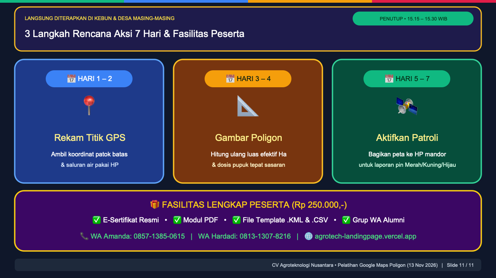
Hari 1–2, Hari 3–4, Hari 5–7) lalu tunjuk banner ungu fasilitas di bagian bawah.
"Bapak dan Ibu sekalian, agar ilmu dan file yang Bapak/Ibu buat hari ini langsung berdampak nyata di kebun maupun desa masing-masing, mari jalankan Rencana Aksi 7 Hari Pertama ini:"
👉 Tunjuk Kartu Hari 1–2, Hari 3–4, dan Hari 5–7
"• Hari ke-1 & 2: Pilih 1 blok prioritas, minta mandor rekam titik GPS patok batas dan saluran air memakai HP.
• Hari ke-3 & 4: Gambar poligon bloknya di Google My Maps, lalu hitung ulang luas efektif hektar dan dosis pupuknya.
• Hari ke-5 s/d 7: Bagikan peta ke HP mandor dan aktifkan laporan rutin Pin Merah, Kuning, dan Hijau."
👉 Tunjuk Kotak Ungu Fasilitas di Bawah
"Seluruh fasilitas—E-Sertifikat Resmi, Modul PDF, serta File Template .KML & .CSV—sudah siap diunduh. Jika minggu depan ada kendala saat praktek di kebun, silakan berdiskusi di Grup WhatsApp Alumni atau hubungi tim kami (Amanda & Hardadi). Terima kasih atas semangat luar biasa Bapak/Ibu hari ini, dan selamat sore!"
💡 Contekan Jawaban Tanya-Jawab (FAQ) untuk Pemateri
Latitude (Lintang: angka kecil antara -11 s/d +6 untuk Indonesia) tertukar dengan kolom Longitude (Bujur: angka besar antara 95 s/d 141 untuk Indonesia)."